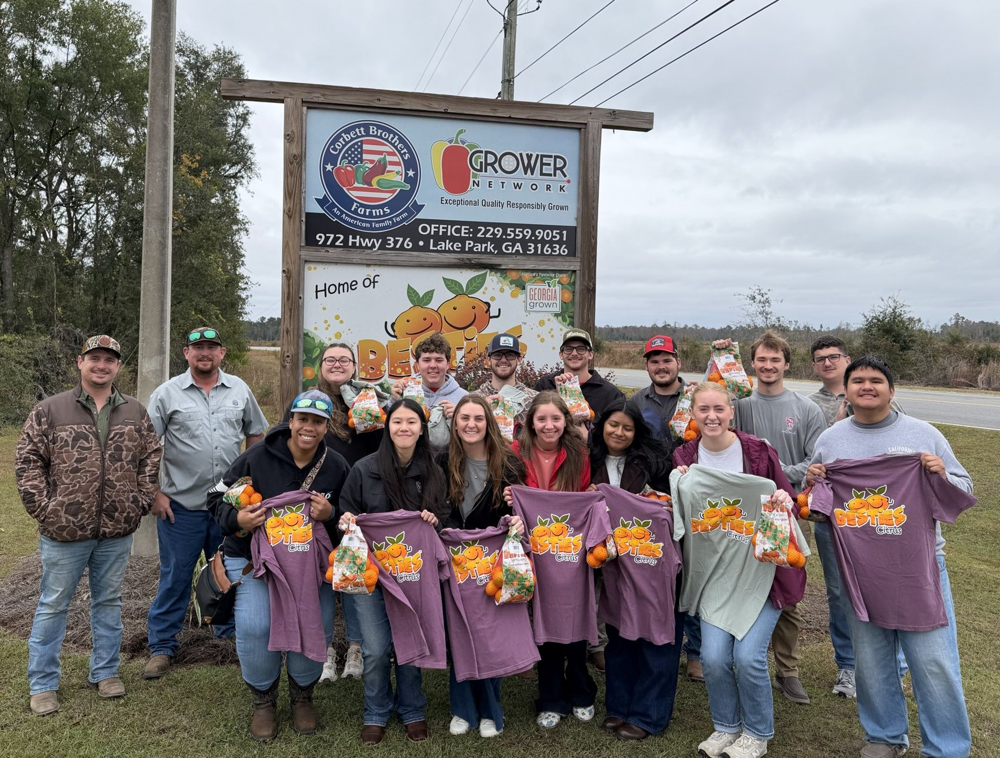
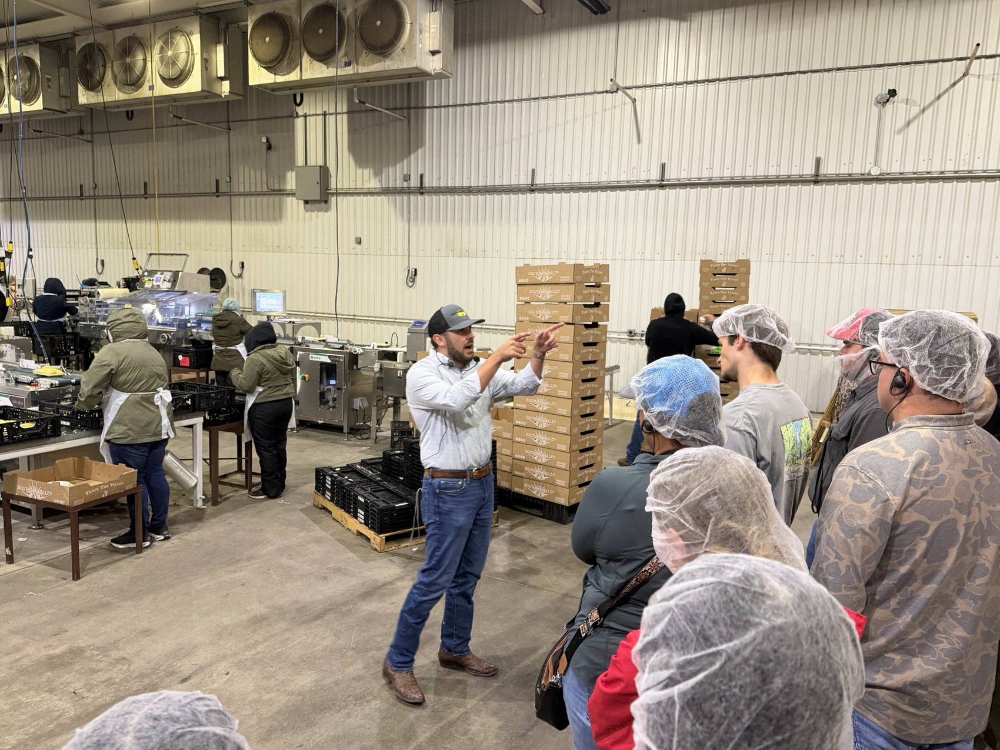
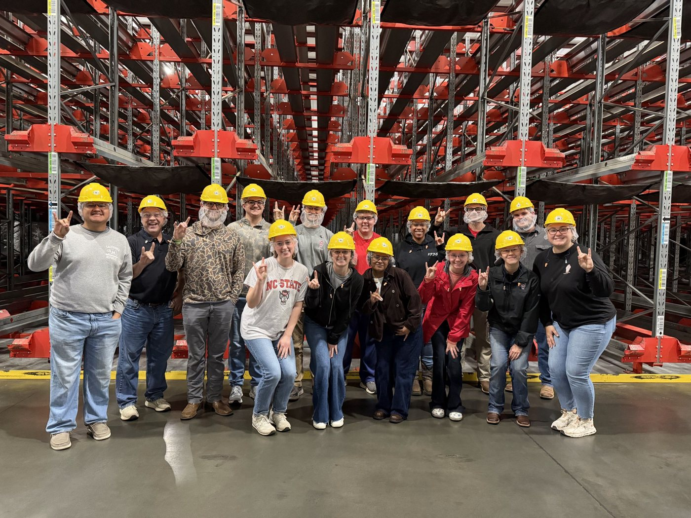
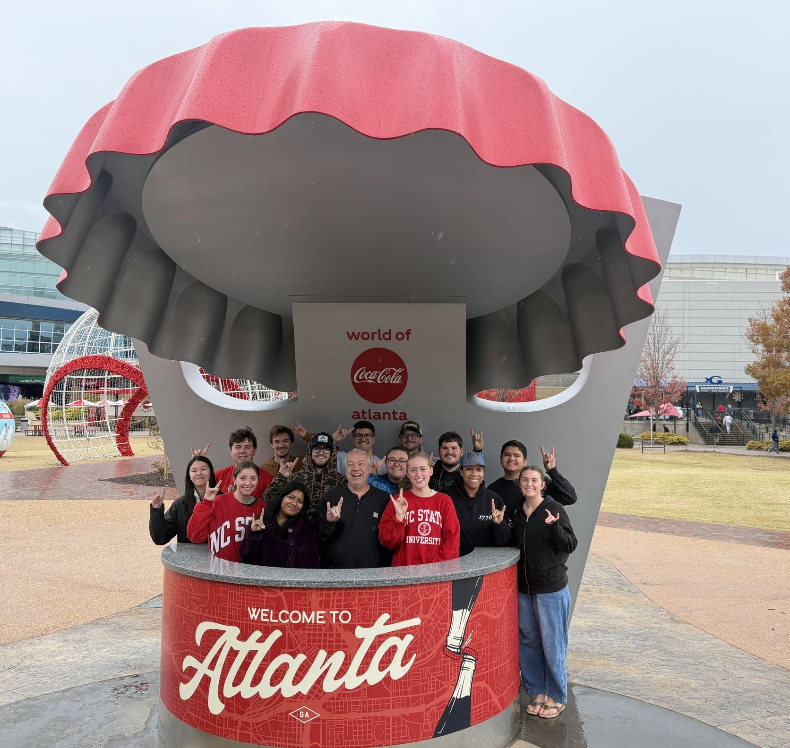
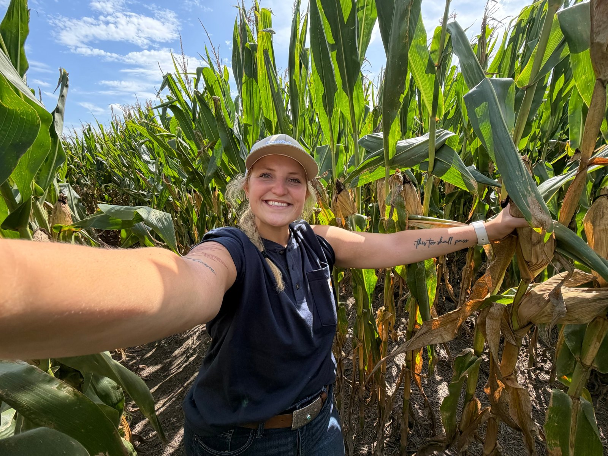
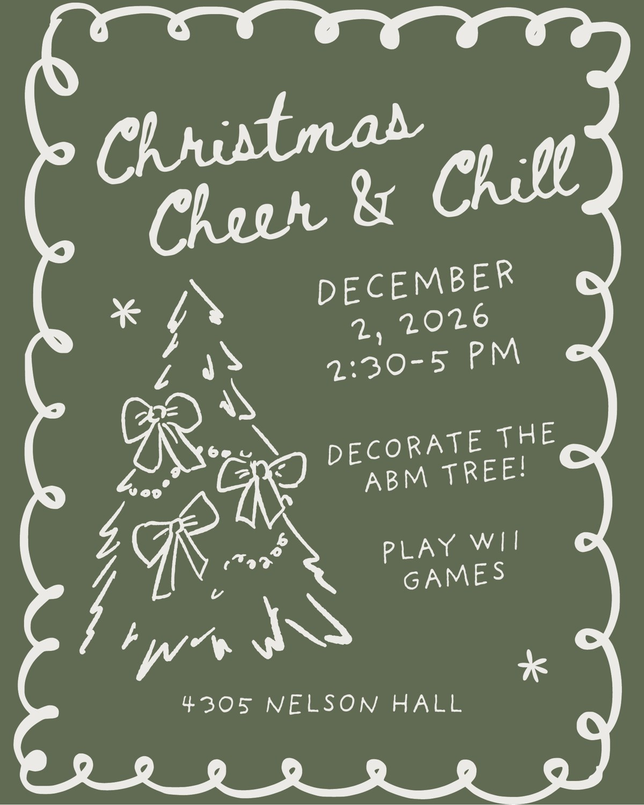

Stop 01 · Lake Park Citrus, in Georgia Navel oranges, pink grapefruit, and satsumas at Corbett Brothers Farms.Act now
Dates you should not miss
Reply by26Nov
Walking at December graduation? Email Dr. Treme now.
If you plan to walk at the ARE ceremony in December, email jtreme@ncsu.edu by Thursday, Nov. 26. We need an accurate headcount.
Monday30Nov
Want a service trip in May? You must attend an info session.
Two Alternative Service Break trips go to the Philippines, on hunger and sustainable agriculture, and to Madagascar, to build homes. Every applicant has to attend an information session. The next one is Monday, Nov. 30, at 5 p.m. in Talley. Applications are due Jan. 20.
Due1Dec
Paid summer policy internship in Washington, D.C.
The Helms/OSM Policy Scholarship places you in a congressional office with a $5,000 stipend. Application, three short essays, and two letters. If you haven’t asked for your letters, ask today.
Opens1Dec
Scholarships and state internships
PACK ASSIST is one application for hundreds of NC State scholarships. State government internships pay $15 an hour for 10 weeks.
Cover story · On the road
Fourteen students, three days, and some of the biggest farm businesses in the country
Dr. Michael Best took 14 ABM students to South Georgia, Nov. 19–21. They saw citrus growing in Georgia, a packing house that ships 20 kinds of vegetables, and the largest peanut shelling operation in the U.S.

Stop 02 · Norman Park Twenty vegetables, one cold chain How Southern Valley chills produce and keeps 20 products moving first in, first out.
Stop 03 · Douglas Peanuts without hands Machines do the shelling and sorting at the largest peanut sheller in the U.S.
Encore · Atlanta Every Coke there is New Coke, Tab, and a carbonated pineapple drink the group voted best.Photos by Michael Best.
ABM in action
She studied grain markets in an ABM workshop. Now she buys grain for a living.

Paige Smith · ABM, May 2026 · Smithfield Grain
Paige took the six-session workshop taught by a Smithfield grain buyer in her last semester. She accepted a job with Smithfield Grain that April.
She learned to hedge bushels on the Chicago Board of Trade and how freight moves grain. She says it made the first months of her job much smoother.
“A farmer will not sell to you if they do not trust you.”Read Paige’s story
Photo courtesy of Paige Smith.
Her advice on classes
Take analytics“As difficult as it may be, analytics has been such a big part of my career thus far.”
Get fast in ExcelIt “will also make you twice as marketable when looking for a job.”
Add policy and macroShe recommends Agricultural Policy (ARE 433) and a macroeconomics course.
Reading Day · Wednesday, Dec. 2
Christmas Cheer and Chill

2:30–5 p.m. · Nelson 4305 · Drop in anytime
Wii games, hot chocolate, and a tree that needs decorating
It’s Reading Day, so there are no classes. Take a break from studying and stay as long as you like. You don’t need to sign up.
- Play Wii games
- Hot chocolate with marshmallows
- Cookies baked by the ABM Ambassadors
- Help build the Christmas Lego set
- Decorate the ABM tree
Your next move
Tell us your news, find your next job
01
02
Your news
Got an internship, a job offer, or a win?
Tell us and you could be in the next issue. Two sentences and a photo are enough. Email Matt Smith at mgsmit25@ncsu.edu.
Email Matt SmithOpportunities
Paid internships, jobs, and scholarships
More than 120 listings for ABM students in one place, with filters and a closing-soon list. Checked every morning.
See every open internshipPaid internships, jobs, and scholarships
Six worth a look this week
Good to know
Answers you may need later
An honor society for first-generation students
Tri-Alpha is for students whose parents did not earn a bachelor’s degree. You need 30 credits, a 3.3 GPA, and a recommendation. Due Jan. 27.
The grain markets workshop runs again next fall
Six sessions with a Smithfield grain buyer. You earn a certificate and one credit hour. You need ARE 201 first.
Internship credit: ARE 492
An internship can count toward Restricted Electives. Send the completed form to Matt Smith.
A class you need is full?
We can’t add you to classes outside ARE, including PE. Get on the waitlist and go the first day, take it at a community college, or take it another semester.